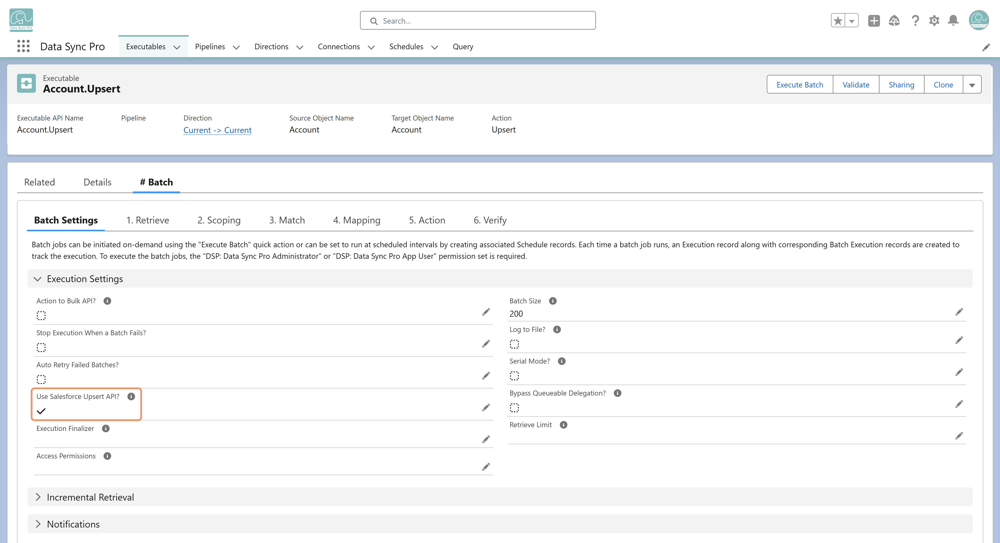

No. When this option is enabled, DSP skips its own Match step and relies on Salesforce's Upsert API to decide whether to insert or update. The Target Matching Field must be an External ID field on the target object for the API to perform the match.
